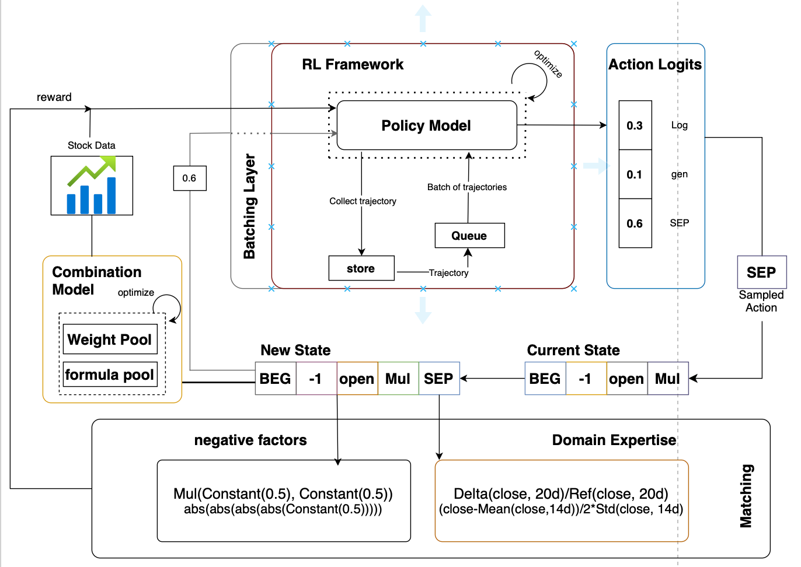
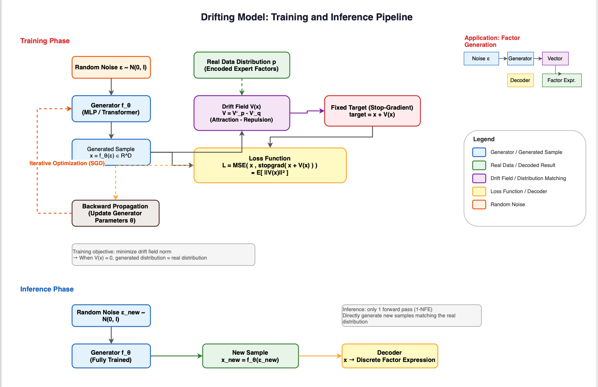
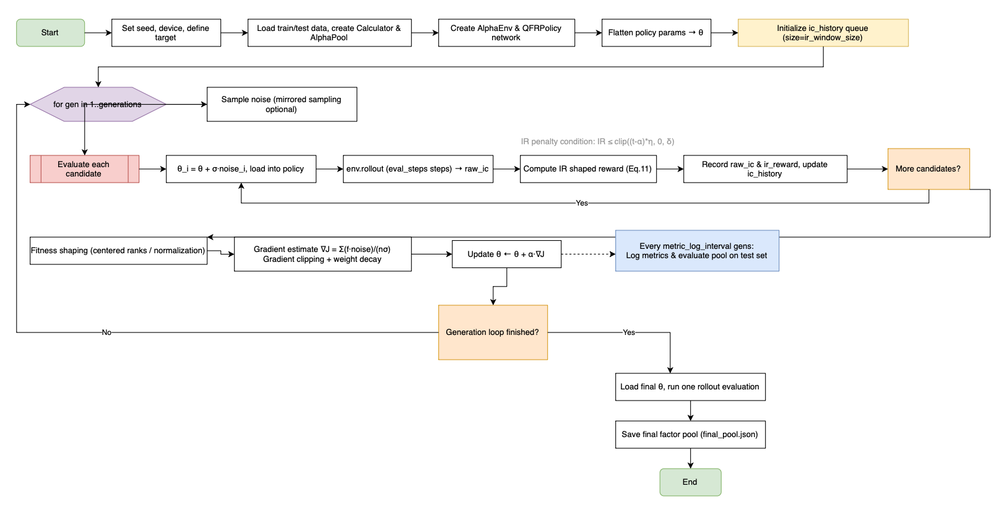

Liu Yijun
Code Create Life
Projects
Here are some of my projects:

Optimization project for TLRS (Trajectory-Level Reward Shaping).
This method introduces an expert factor subset and a negative factor subset, enabling the reinforcement learning model to learn from expert factors while reducing the likelihood of exploring invalid factors.

The Drifting Model separates distribution matching into a training-time drift process and an inference-time one-step generation. During training, a generator maps random noise to a sample, and a drift field based on both real and generated samples defines a target direction.
The loss forces the generator output towards a stop-gradient target, effectively minimizing the drift field norm without backpropagating through the distribution. After iterative optimization, inference requires only a single forward pass to produce new samples, which can then be decoded into final expressions.

This flowchart presents the Evolution Strategies (ES) training pipeline for a QFR policy that generates a stock factor pool. The process begins by initializing the random seed, target expression, data splits, AlphaPool, AlphaEnv, and the policy network.
The ES loop then runs for a fixed number of generations: each generation samples noisy perturbations of the policy parameters (with optional mirrored sampling), evaluates each candidate by rolling out the policy in the environment, computes a shaped reward using an IR-based penalty (Eq. 11), performs fitness shaping (centered ranks), estimates the gradient, and updates the parameters. Periodic logging evaluates the current factor pool on the test set. After all generations, the final policy parameters are used to produce and save the final factor pool.
Powered By GitHub Actions And Hitokoto
Views: | Visitors: